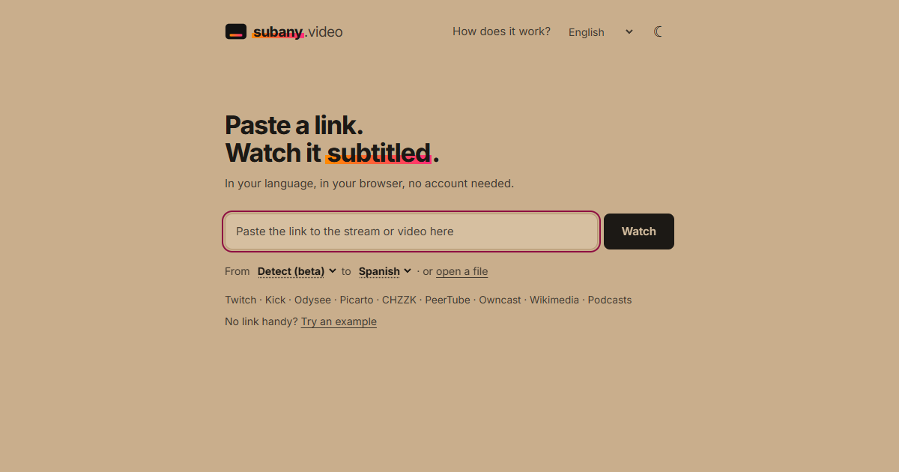

CleanYourMail
Local-first, reversible inbox cleanup for coding agents.
About
Data Scientist · Madrid, Spain
At EIPSA, I build computer-vision systems and automation for engineering and manufacturing. I also develop practical AI products and local-first tools.
Featured project · Open source
Any video, in your language.
Live subtitles and translation for streams and videos, processed privately in your browser. No account needed.

Local-first, reversible inbox cleanup for coding agents.
Safe, reversible Android debloating without root.
Autonomous esports content, from professional demos to publication.
Live Spanish subtitles for Twitch and YouTube, running locally.
Document control, reporting and automation for engineering projects.
BTC prediction-market automation with backtesting and Telegram controls.
Scheduling and customer management for auto repair shops.
Claude-powered assistance, automation and remote control from Telegram.
Real-time Counter-Strike 2 weapon recognition using OCR.